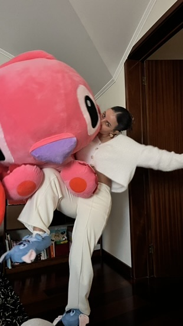

o primeiro capítulo não foi o último
A nossa história.
o nosso caminho
O mundo pode esperar uns minutos.
Este lugar foi feito para os dias em que tudo parece demasiado, mas também para os dias em que só te apetece ficar perto de mim.
feito pelo teu Afonso · para a minha Lara ❤️Se hoje estiver difícil, não precisas de carregar tudo sozinha.
Entra. Respira. Fica um bocadinho.
Este cantinho é teu — e eu estou aqui contigo. ❤️

Não precisas de resolver nada agora.
Vamos só fazer o próximo minuto.
Não precisamos de resolver nada agora.
Palavras minhas guardadas para os momentos em que talvez precises mais delas.

Às vezes uma fotografia parece só uma fotografia. Mas esta faz-me lembrar como é bom poder olhar para o lado e encontrar-te.
Quero encher a nossa história de momentos assim. Uns grandes, outros completamente simples. Desde que sejam contigo.
Mexe nas coisas. Há pequenas surpresas escondidas — e algumas só aparecem depois de explorares.
Nem tudo precisa de estar à vista. Explora com calma.
Cada estrela aparece quando descobres, lês, respiras ou vives um bocadinho deste lugar.
Quero casar contigo. Um dia quero levar-te para um lugar bem longe, bonito e tranquilo, e pedir-te em casamento da maneira que imagino.
Quero a nossa casinha, as nossas viagens, as nossas aventuras e aqueles dias simples que acabam por ser os mais importantes.
E imagino-nos a construir uma família linda. Uma menina e um menino. ❤️
E no meio de tudo isso, quero continuar a ser o teu polícia favorito.
Ainda temos tantos capítulos para escrever.
Eu quero vivê-los contigo. ❤️
Meu amor,
fiz este lugar porque, às vezes, gostava de conseguir estar contigo em todos os momentos. Nos dias bons, nos dias difíceis, quando ris, quando tens medo, quando só queres silêncio.
Não consigo estar fisicamente em todo o lado. Mas posso deixar um bocadinho de mim aqui.
Quando precisares, volta. Abre uma carta. Respira comigo. Olha para uma fotografia. Ou simplesmente fica.
Eu escolho-te.
Hoje, amanhã e em todos os capítulos que ainda faltam. ❤️
— Afonso